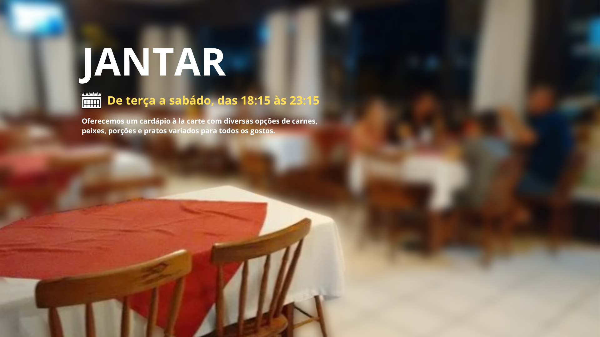
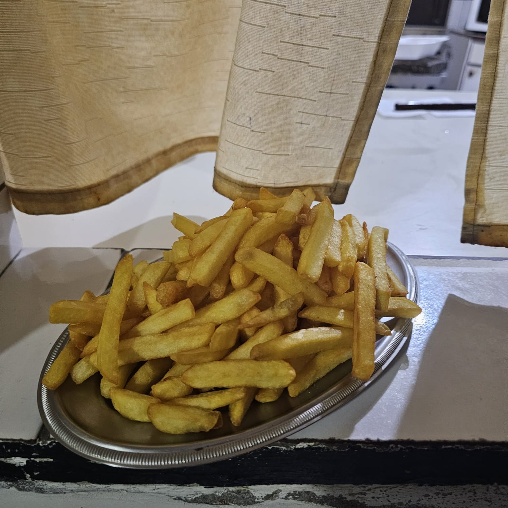
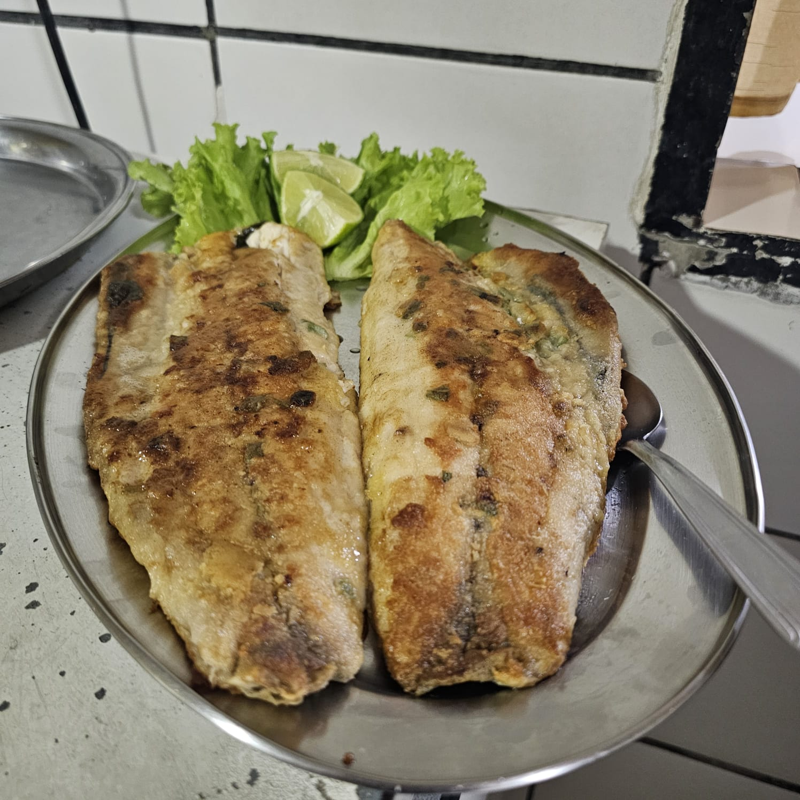
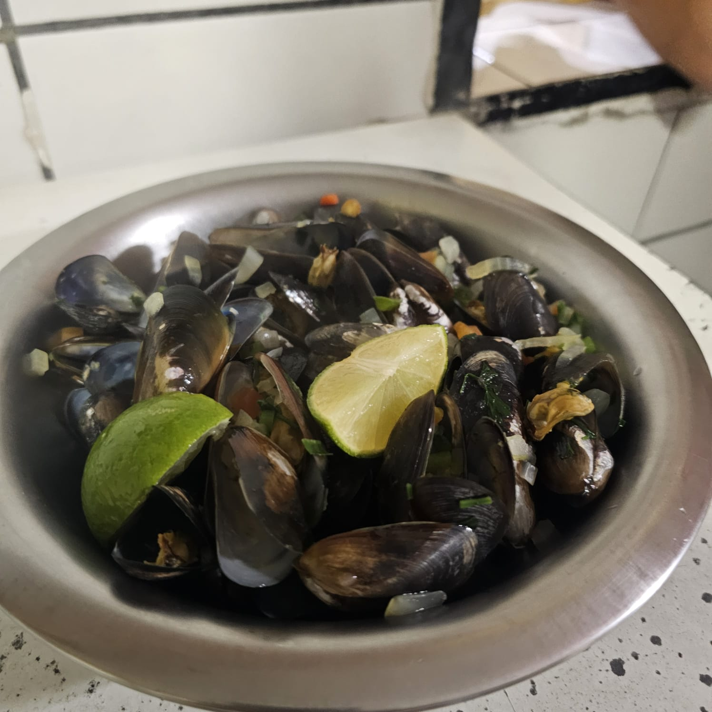
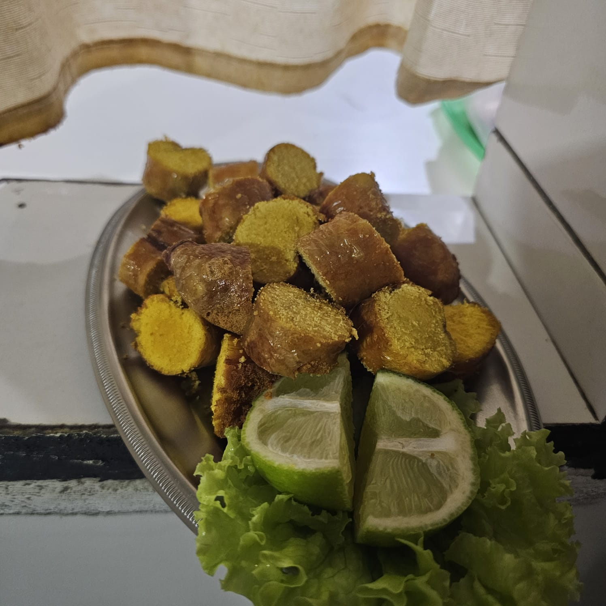
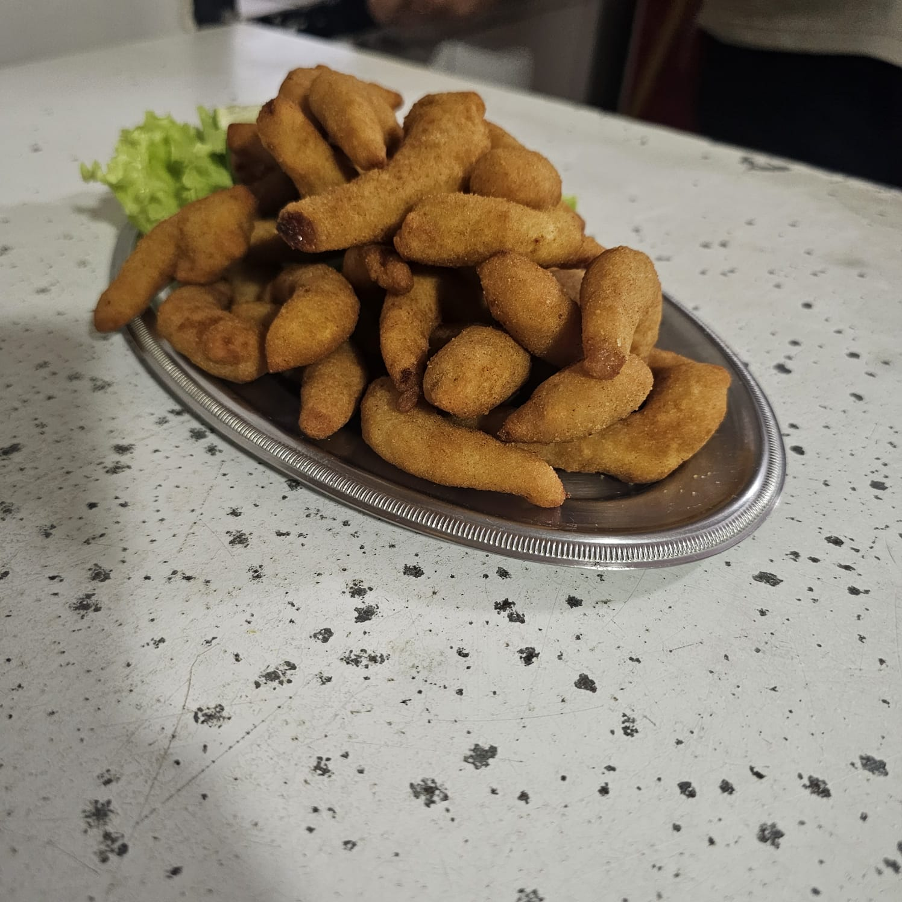
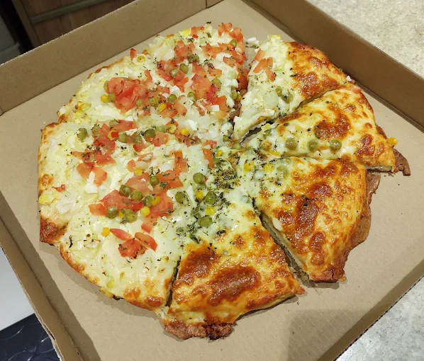
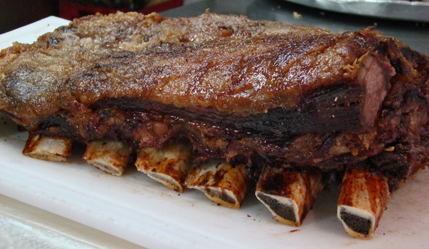

Contamos com menu à la carte, com diversas opções de frutos do mar, porções, carnes, e lanches.






A nossa costela é preparada há mais de 15 anos, sempre seguindo o mesmo processo. Todas as sextas-feiras, saímos para comprar produtos frescos e a costela. Às 12h40, iniciamos a preparação: primeiro colocamos as ripas no latão. Em seguida, pegamos as verduras frescas, cortamos e batemos no liquidificador com água, formando uma espécie de molho. Depois, fazemos vários pequenos furos na carne com uma faca, despejamos esse líquido por cima das ripas e acrescentamos o sal grosso. Por fim, ligamos o latão a gás e deixamos assar por aproximadamente 6 horas e 30 minutos. Assim, a costela fica pronta para começar a ser servida aos clientes.

Conheça os pratos favoritos dos nossos clientes
Costela preparada lentamente por mais de 6 horas, acompanhada de mandioca e molho especial da casa.
Camarões crocantes servidos com molho especial e limão fresco.
Filé grelhado acompanhado de fritas crocantes e salada especial da casa.
(47) 93425-2506
Rua Iguaçu, 298 - Santo Antonio
JANTAR
Peça pelo telefone
(47) 3425-2506